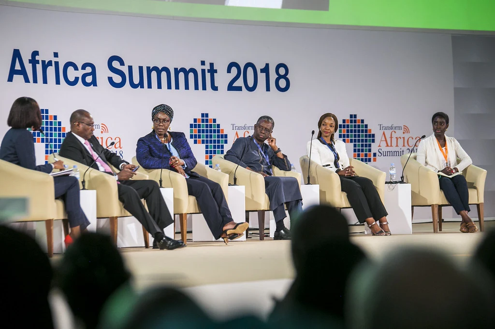
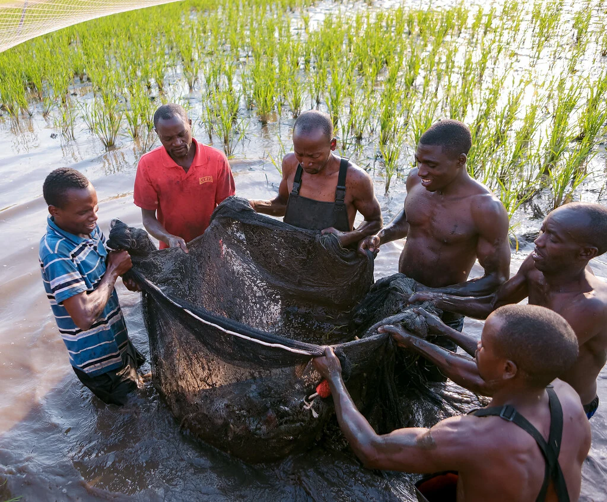

Human connectionPhotography ↗
STUDIOStart a project ↗
Good stories.
Full volume.


A creative production studio for ideas that deserve to be seen, heard and felt.
See what we make ↗A FEW MOMENTS FROM OUR WORLD
Stories, in focus.
A room full of ideasEvent coverage ↗
THE PEOPLE BEHIND THE FRAME
Creative Sound Studio brings photography, filmmaking and live production together in Kigali. Every project starts with listening.